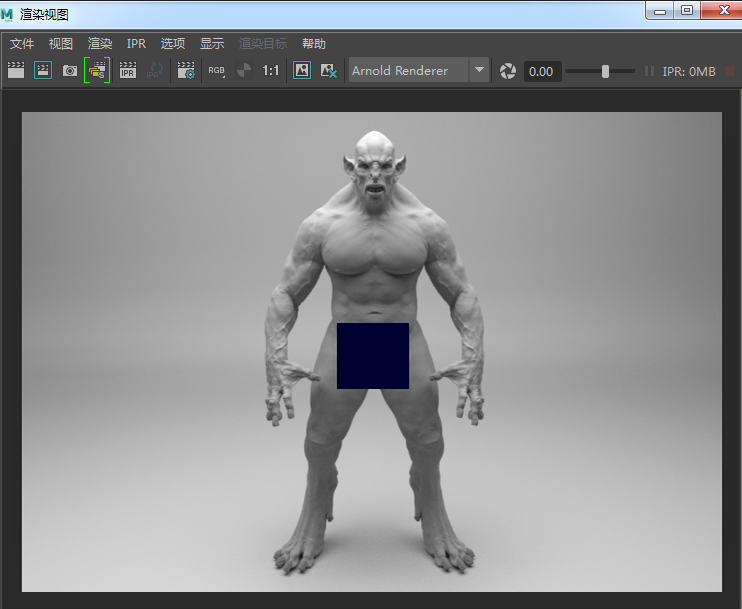

使用 标记的置换贴图
| 未使用置换 | 使用置换 |
本简单教程旨在介绍如何在 Arnold 中使用正确的置换工作流渲染从 Mari 中导出的纹理贴图。本示例使用一个精灵模型和一些置换贴图（感谢 Alex Huguet 提供）。
有关 UDIM 纹理标记的详细信息，请单击此处。
UV 平铺 - UDIM
UDIM 值是一种表示纹理整数坐标的方式，整数坐标源自纹理左下角在 UV 空间中的坐标。通过这种方式，可以使用多个纹理来覆盖一个模型，而不是使用单个较大的纹理。
这是 Mari 导出其 UV 纹理空间时使用的约定。它从 1001 (0,0) 开始，并在 U 方向上继续移动 10 个偏移量。然后前进到 V 的下一行，这意味着在 U 方向每移动 10，则在 V 方向移动 1。
1021 1022 1023 1024 1025 1026 1027 1028 1029 1030
1011 1012 1013 1014 1015 1016 1017 1018 1019 1020
1001 1002 1003 1004 1005 1006 1007 1008 1009 1010
下面的 UV 偏移栅格更好地说明了这种关系（本示例显示的范围仅为五个，因为精灵模型要使用五个置换贴图）：
在 UV 纹理编辑器中，您可以看到各个 UV 已放置在 UV 空间中，从 1001 (0,0) 到 1005 (5,0)，并且置换纹理文件也已相应进行命名：
纹理路径
打开置换文件纹理时，Arnold 会使用“相对”文件路径命名约定。如果您在渲染纹理时遇到问题，请将文件路径名更改为“绝对”路径（更改项目目录会自动将路径名更改为“绝对”路径）。
要在文件输入中使用此方法，请在文件名中使用
相对文件路径 - Textures\displacement. <udim>.tif
绝对文件路径 - C:\Users\Documents\Project\Textures\displacement.<udim>.tif
另一种选择是禁用“绝对纹理路径”(Absolute Texture Paths)。此选项位于“渲染设置”(Render Settings)窗口的“系统 > 搜索路径”(System > Search Paths)下。

“绝对纹理路径”(Absolute Texture Paths)位于“渲染设置”(Render Settings)窗口的“系统 > 搜索路径”(System > Search Paths)下
您也可以将文件 2D 纹理节点连接到着色网络，并在属性编辑器中将第一个 UV 平铺加载到“图像名称”(Image Name)属性中。
选择“UDIM (Mari)”以作为“UV 平铺模式”(UV Tiling Mode) - 如果 UV 坐标使用公式 1000+(u+1+v*10) 表示为四位数，请选择此选项。
“UV 平铺模式”(UV Tiling Mode)设置为“UDIM (Mari)”
置换属性
文件纹理（使用 C:\Users\Documents\projects\Displacement-troll\source../images\displacement.<udim>.tif 的绝对路径名）连接到置换节点，该节点连接到指定给精灵的着色器。
“向量空间”(Vector Space)已设置为“世界”(World)空间，比例已设置为 0.75。“边界填充”(Bounds Padding)已设置为 1，“标量零值”(Scalar Zero Value)已设置为 0.25（这些值只起大致的指导作用，您需要根据置换贴图的生成方式和位置更改这些值）。
置换着色器网络
本示例中使用的置换属性
细分
要想看到置换贴图的细节，需要增大模型的细分设置。在本例中，细分类型已设置为 Catclark，迭代次数增大到 2。
有关使用

最终渲染（减去一个渲染块）